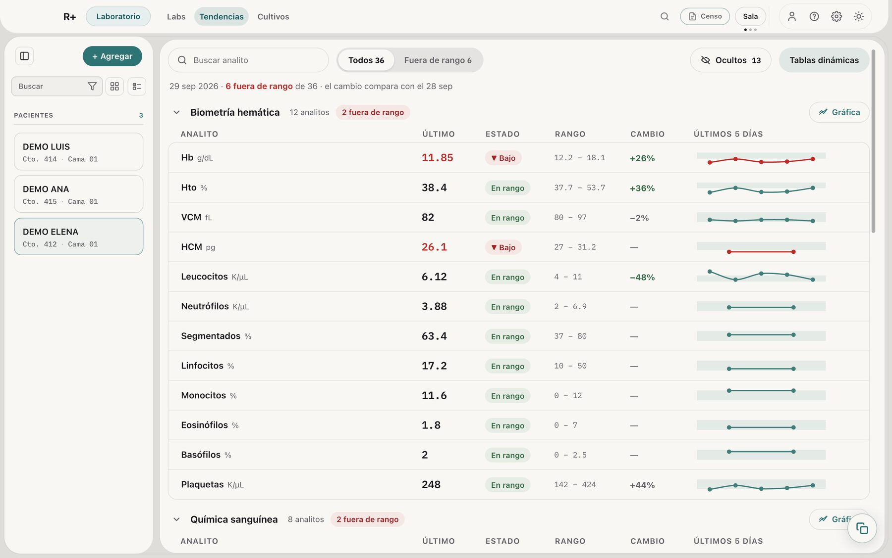

Para residentes en guardia
Tu guardia,
en un solo lugar.
Los labs entran del portal sin copiarlos. Signos, balance, medicamentos y pendientes quedan en cada expediente, y tus compañeros ven lo mismo desde su Mac o iPad.
Ver descargas
Cómo funciona
Labs del portal, el Resumen de cada cama y la nota que empieza llena.
Ver cómo funciona →Equipo
Todos ven el mismo censo, y la entrega de guardia no pierde pendientes.
Ver equipo →Privacidad
Los datos viven en tu computadora, cifrados. Nube es opcional.
Ver privacidad →Lo que R+ no hace
R+ no interpreta tus labs.
Hace cuentas: eTFG, calcio corregido, BUN/Cr, reticulocitos corregidos. Y pinta en rojo lo que sale del rango que reporta el laboratorio.
Ahí se queda. No da interpretaciones ni diagnósticos, y no sugiere tratamientos. Eso lo decides tú.